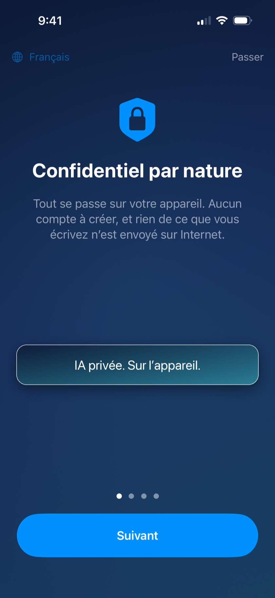

Tomesi répond à vos questions directement sur votre iPhone — en avion, à l'étranger, en zone blanche. Vos conversations ne quittent jamais votre téléphone.
Télécharger sur l'App Store
L'intelligence artificielle est installée sur votre iPhone. Mode avion, montagne, plein océan : Tomesi répond, sans réseau et sans frais d'itinérance.
Rien n'est envoyé sur internet, rien n'est stocké ailleurs que chez vous. Pas de compte à créer, pas de données collectées — ce n'est pas une promesse, c'est l'architecture même de l'app.
Vous payez une fois, l'app est à vous. Pas de mensualité, pas de crédits, pas de compte premium.
Astuce : un mode « Précision » optionnel télécharge un modèle plus puissant (~3 Go) pour les réponses qui demandent plus de finesse.
Touchez le micro et parlez : votre question part toute seule après une courte pause, et la réponse est lue à voix haute. La dictée et la lecture fonctionnent dans toutes les conversations.
Scannez un document papier ou joignez un PDF à un message pour l'interroger. Retrouvez aussi vos anciennes discussions grâce à la recherche.
Le mode Précision change de moteur : des réponses plus rapides et plus justes, avec moins de chauffe.
Oui. Après l'installation initiale, Tomesi n'a plus besoin d'internet : le modèle d'intelligence artificielle tourne entièrement sur votre iPhone. Vous pouvez le vérifier en activant le mode avion.
Nulle part. Ils restent sur votre téléphone. Tomesi n'a ni serveur de conversation, ni compte utilisateur, ni publicité. Voir notre politique de confidentialité.
ChatGPT vit sur des serveurs : il faut une connexion, et vos échanges y transitent. Tomesi vit sur votre iPhone : moins encyclopédique qu'un géant du cloud, mais toujours disponible, totalement privé, et sans abonnement.
Parce que Tomesi n'a pas de coûts de serveurs : l'IA tourne sur votre appareil. Vous payez l'application une fois, c'est tout.
Un iPhone 15 Pro ou plus récent, avec 8 Go de mémoire vive et iOS 26 ou plus récent. Prévoyez environ 4 Go d'espace libre pour l'assistant standard.
Tomesi est traduit en 13 langues (français, anglais, allemand, espagnol, italien, néerlandais, polonais, portugais, japonais, coréen, chinois simplifié, russe…) et l'assistant comprend et répond dans encore davantage de langues.
Oui. MonIA s'appelle désormais Tomesi, et le site monia.info devient tomesi.com. Si vous l'avez déjà achetée, rien à racheter : la mise à jour suffit, et vos conversations restent sur votre téléphone.
Écrivez-nous : support@tomesi.com — nous répondons vite, et vos retours façonnent les prochaines versions.